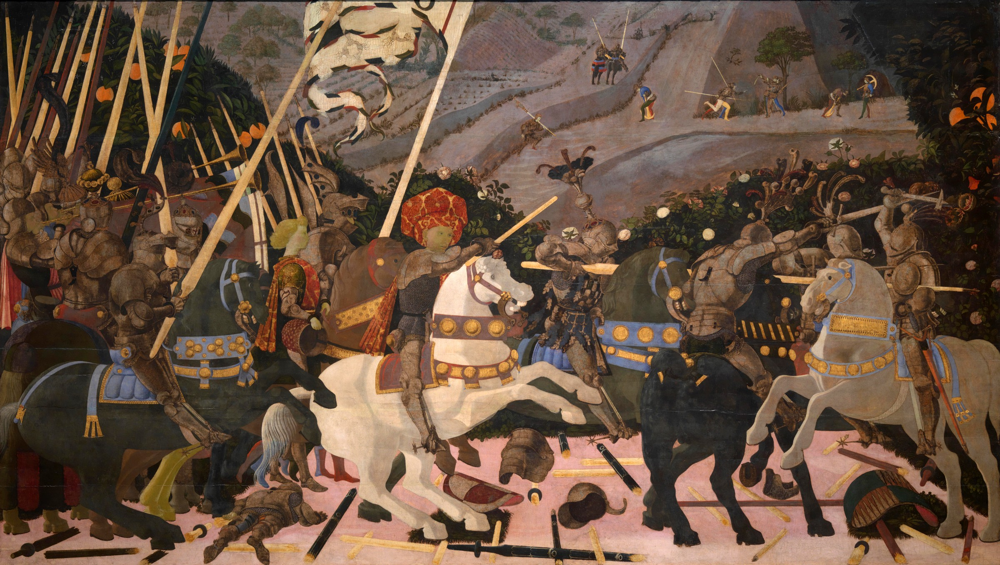

The Battle of San Romano — Niccolò da Tolentino Leads the Florentines
National Gallery via Wikimedia Commons · Domaine publicNiccolò da Tolentino leads the Florentines
London · National Gallery
Look at the ground. The broken lances form a kind of grid; pieces of armour are seen from different angles. Uccello uses the debris of battle to construct depth.